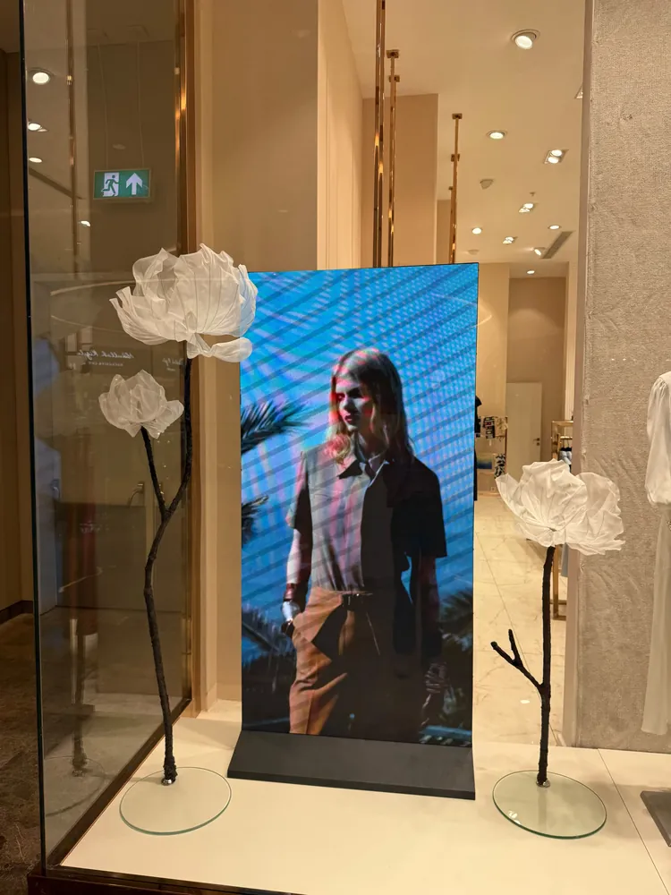
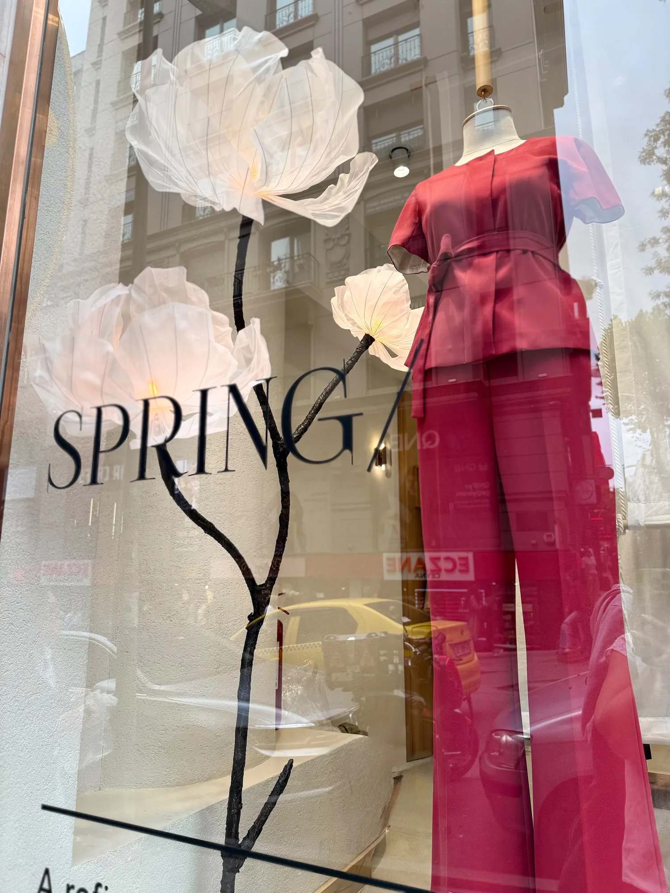
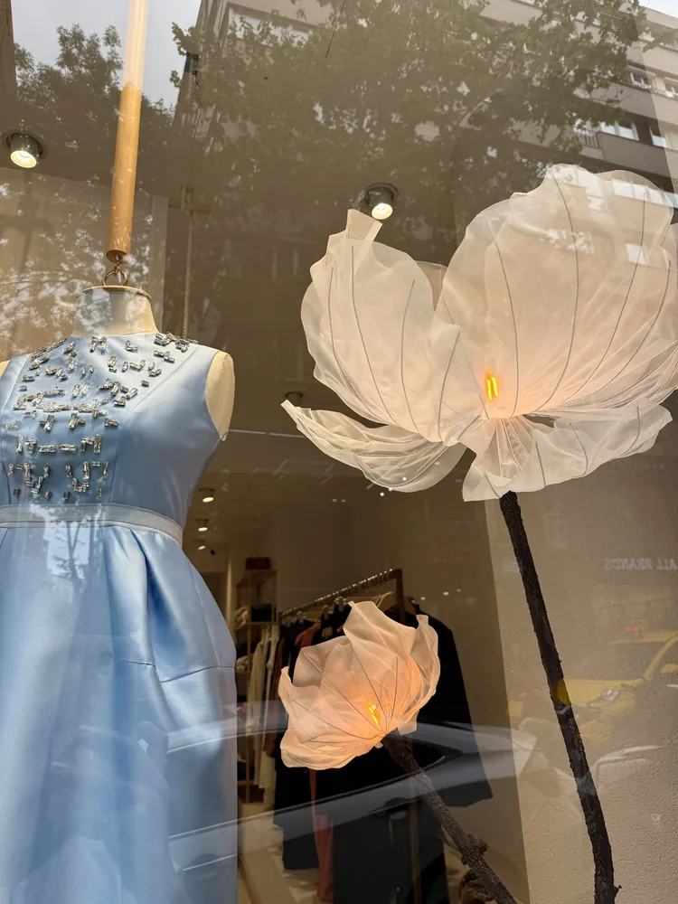

Vitrin tasarım ve dizayn
Vitrin süsleme dev çiçek tasarımı.
Mağaza vitrinleri ve dinlenme köşeleri için, markanızın konseptine uygun dev çiçek tasarımları. Elde hazırlanır, vitrinde fark edilir.

Neden Eden Floral Art
Vitrinde durdurucu bir detay
- 01
Markanızın konseptine göre
İstenilen renk ve modelde çalışabiliyoruz; vitrin temanıza göre tasarlıyoruz.
- 02
Işıklı çiçekler
Organze çiçekler ışıkla buluşunca yumuşak geçişler ve sıcak bir parlaklık verir.
- 03
Vitrin ve köşe dekoru
Vitrin süslemenin yanında dinlenme köşesi gibi mağaza içi alanlar için de tasarım yapıyoruz.
- 04
Tekrar çalıştığımız markalar
Geçen sene vitrinlerini şakayıklarla süslediğimiz bir markaya bu sefer köşe dekoru tasarladık.
Mağaza vitrin süsleme: neden dev çiçek?
Vitrin, çoğu müşterinin mağazayla ilk karşılaştığı yerdir. Dev bir çiçek, sokaktan geçen birinin adımını yavaşlatan, vitrini fotoğraflanabilir yapan bir odak noktasıdır. Eden Floral Art olarak tül, krapon ve organzeden elde hazırladığımız dev çiçeklerle markanızın konseptine uygun vitrin tasarımı ve vitrin çiçek dekoru yapıyoruz.
Işıklı organze çiçekler
Organze çiçekler ışıkla buluşunca yumuşak geçişler ve sıcak bir parlaklık verir. BIRELIN Nişantaşı vitrininde ışıklı, tül ve organze dev çiçeklerle çalıştık; vitrin camının önünde ekranın iki yanında duran beyaz tül çiçekler de bu işin parçasıydı. Aşağıdaki örnek işlerde ışıklı çiçeklerin vitrinde nasıl göründüğünü inceleyebilirsiniz.
Vitrin ve mağaza içi köşe dekoru
Vitrin süslemenin yanında dinlenme köşesi gibi mağaza içi alanlar için de tasarım yapıyoruz. Bir mücevher markasının vitrinlerini bir sene şakayıklarla süsledik, bir sonraki sefer dinlenme köşesi için dev karahindiba (dandelion) ve lilyumlarla köşe dekoru tasarladık. Mağaza tavanından sarkan lila pilise kumaş çiçek heykeli ise mağaza içi tasarıma bir örnektir.
Sezona özel tasarımlar
Çiçekler kumaş ve krapon olduğu için sezonluk vitrin temasına göre renk ve model seçilebilir; mevsime ve kampanya dönemine göre farklı kompozisyonlar planlanabilir. "SPRING" yazılı Nişantaşı vitrinimiz sezona özel bir örnektir.
Süreç
- Vitrin fotoğrafını, ölçüsünü ve marka renklerinizi Instagram'dan (@eden.floralart) DM ile yazın.
- Konsepte uygun tasarımı ve fiyatı birlikte netleştirelim.
- Çiçekler atölyede elde hazırlanır.
- Türkiye geneli kargo ile gönderilir; kurulum için DM'den konuşalım.
Diğer çalışmalarımız
Aynı çiçekleri nişan, söz ve kına süslemelerinde, doğum odası süsünde ve etkinlik tasarımlarında da kullanıyoruz. Etkinlik tarafında çalışıyorsanız organizasyon firmaları için dev çiçek dekoru sayfamıza bakabilirsiniz.
Öne çıkan çalışma
BIRELIN Nişantaşı
BIRELIN Nişantaşı mağazası vitrin çiçek dekor çalışmamız. Kendi işimiz diye demiyoruz, gerçekten çok beğendik.


Örnek işler
Vitrin ve köşe dekoru




Sıkça sorulanlar
Merak edilenler
Hangi tür vitrinlere çalışıyorsunuz?
Mağaza vitrinleri ve mağaza içi köşe dekorları için çalıştık. Konseptinizi DM'den yazın, uygun olup olmadığını birlikte değerlendirelim.
Vitrin tasarımında renk ve model seçilebiliyor mu?
Evet, istenilen renk ve modelde çalışabiliyoruz.
Başka şehirdeki mağazalar için çalışıyor musunuz?
Türkiye geneli kargo ile gönderiyoruz; vitrin işleri için seçenekleri DM'den netleştirelim.
Fiyatlar nasıl belirleniyor?
Fiyat; çiçeğin boyutuna, adedine, rengine ve tasarımın kapsamına göre değişir. Fikrinizi DM'den yazın, size özel fiyat verelim.
Başlayalım
Vitrininizi birlikte tasarlayalım.
Diğer hizmetler: Doğum odası süsüNişan & düğünOrganizasyon firmaları